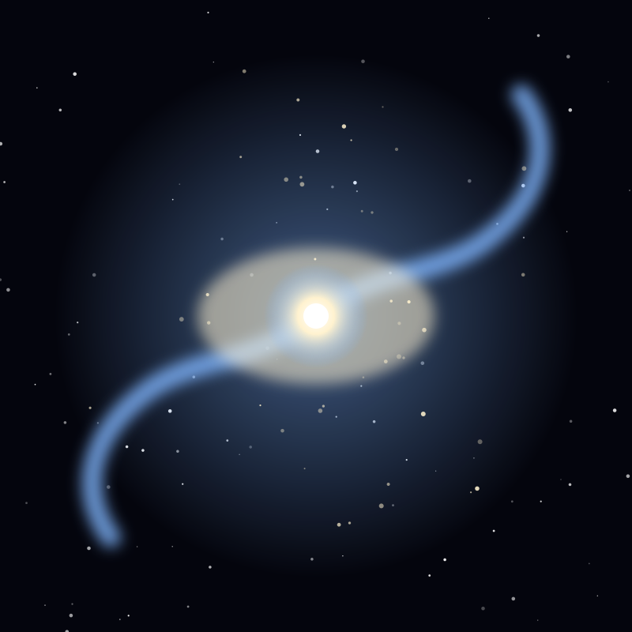

Galaxy
Whirlpool Galaxy
A grand-design spiral 31 million light-years away, caught mid-interaction with a smaller companion galaxy.
Object 26 of 26

Key facts
- Distance
- 23 million light-years
- Diameter
- ~76,900 light-years
- Type
- Grand-design spiral (SA(s)bc)
- Companion galaxy
- NGC 5195
- Catalogue
- Messier 51
- Constellation
- Canes Venatici
- Discovered
- 1773, Charles Messier
- First spiral resolved
- 1845, Lord Rosse
Overview
The Whirlpool Galaxy, catalogued as M51, is the textbook example of a grand-design spiral — a galaxy with two bright, well-defined arms winding cleanly out from its centre. It lies about 23 million light-years away in Canes Venatici, the Hunting Dogs.
It is accompanied by the smaller, yellowish galaxy NGC 5195, which appears at the end of one of the spiral arms. The pair is one of the most photographed and most studied galaxy systems in the sky.
The Interaction
NGC 5195 has passed close to M51, and the encounter is what gives the Whirlpool its extraordinary definition. The near pass sent a density wave through M51's disk, compressing gas and dust and brightening the arms into prominence.
A tidal bridge of material connects the two galaxies, and the smaller one shows signs of being stripped and disturbed. The pair is caught mid-collision, a snapshot of a process that takes hundreds of millions of years.
The First Spiral
In 1845 the Irish astronomer William Parsons, the third Earl of Rosse, built a 72-inch telescope and drew M51's curling arms. It was the first time anyone had recognised a nebula as having spiral structure.
That drawing, made nearly 70 years before anyone understood that such nebulae were galaxies far beyond our own, effectively began the study of galactic structure.
Star Formation
The compressed arms are studded with pink knots of ionised hydrogen where massive young stars are forming, and the system has hosted multiple observed supernovae, including SN 2011dh, a bright stellar explosion recorded in 2011.
Its combination of face-on orientation, bright arms and active star formation makes M51 a standard reference galaxy — the object astronomers reach for when they need to explain what a spiral galaxy looks like.